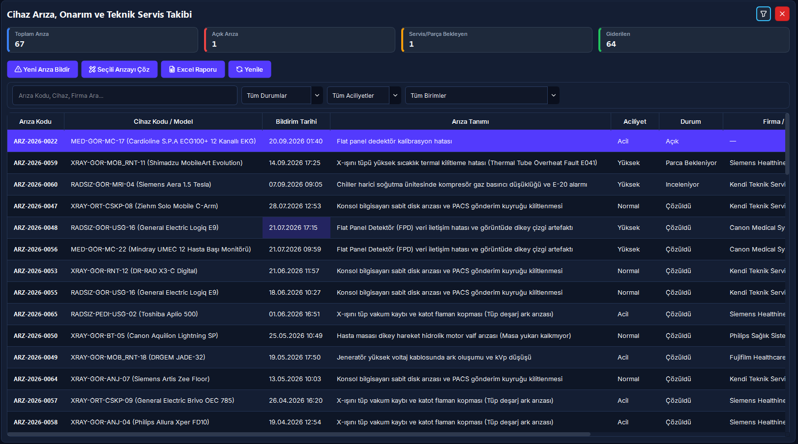
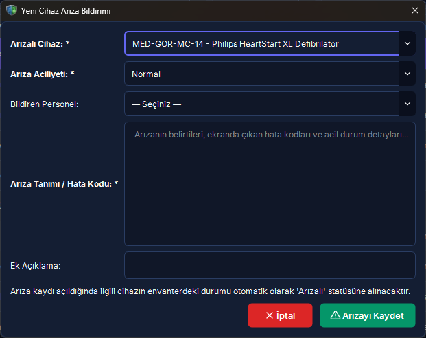
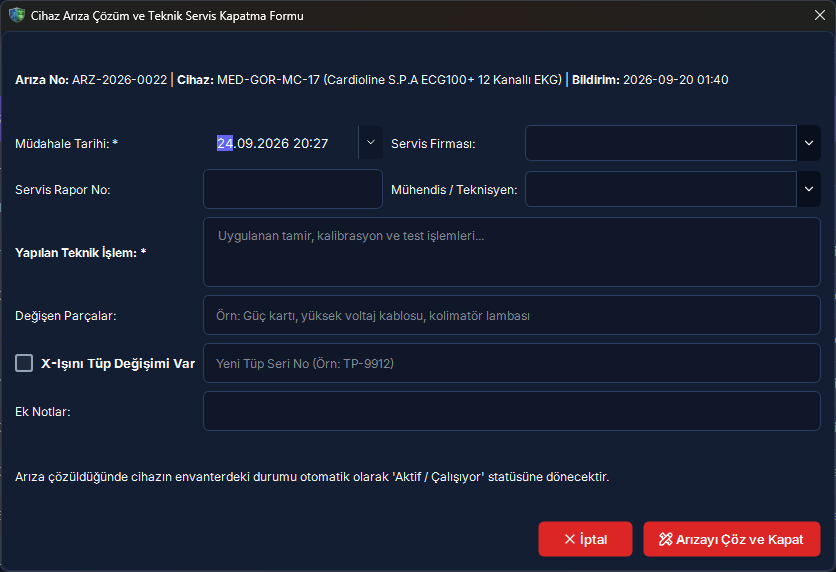
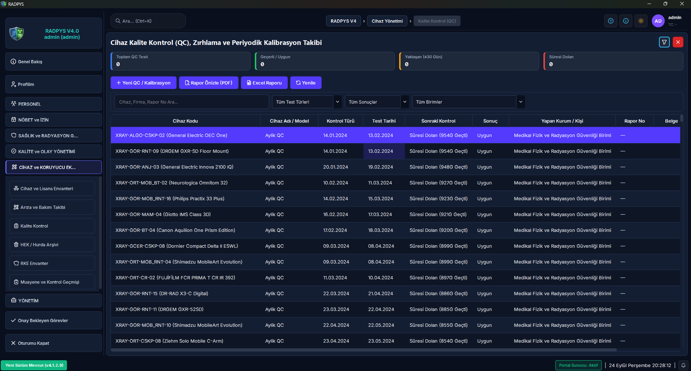
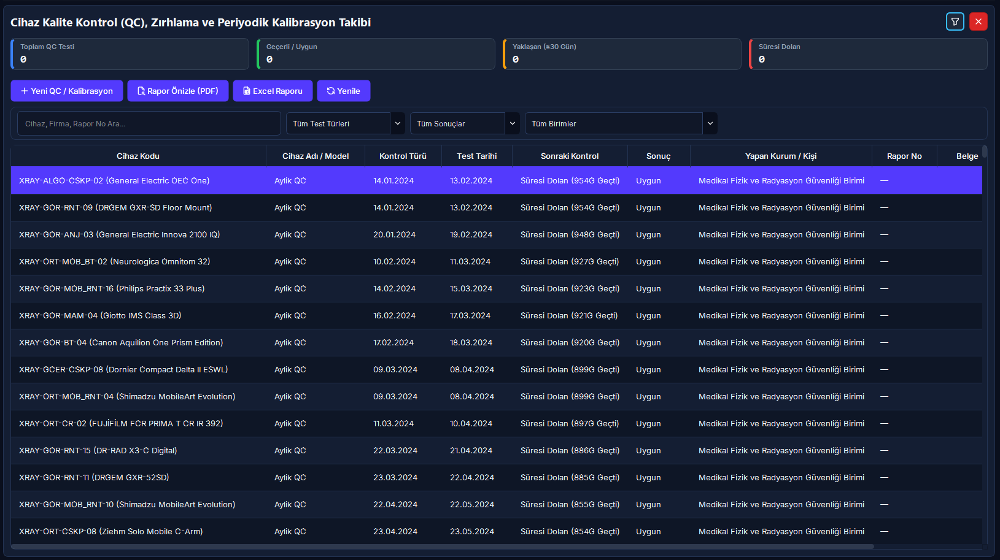
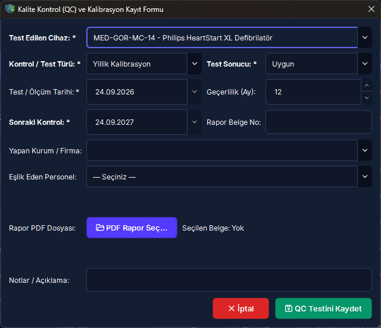

Cihaz Arıza, Periyodik Bakım ve Kalite Kontrol (QC)
Radyoloji departmanındaki tüm tıbbi cihazların teknik arıza ve onarım süreçlerini, ihale şartnamelerine dayalı Aylık Bakım Radarı ile planlanan periyodik bakım takvimlerini ve 4 adımlı modern sihirbaz üzerinden yürütülen Kalite Kontrol (QC) / kalibrasyon testlerini yöneten entegre karar destek merkezidir.
Kısa Reçete (20 Saniye Kuralı)
Radyoloji cihazının ihale sözleşmesi sonuna kadar olan tüm periyodik bakım aylarının önceden belirlenmesi ve bakım günü geldiğinde ıslak imzalı servis formuyla kapatılması.
[Periyodik Bakım Yönetimi] ekranından [İhale Bakım Takvimi Planla] butonuna tıklayın. Cihazı, ilk bakım tarihini, sözleşme bitişini ve periyodu (1, 3, 6 veya 12 Ay) seçip takvimi oluşturun. Bakım yapıldığında [Bakımı Tamamla] ile servis formu PDF'ini yükleyin.
Sözleşme bitimine kadar tüm randevu slotları otomatik olarak takvime işlenir. Aylık radar kartlarında yaklaşan veya geciken bakımlar anında görülür; servis formları KVKK kasasında şifrelenir.
Kritik Sahada Yanlış Bilinen Kurallar (Mit Avcısı)
5N1K Kural ve Ayar Çözümleme Tablosu
Arıza ve onarım, periyodik bakım radarı ve kalite kontrol sihirbazının operasyonel kuralları.
Arıza, Bakım ve Kalite Kontrol Yaşam Döngüsü
Aşağıdaki şema; arıza bildirimi ve parça değişimini, ihale şartnamesine dayalı periyodik bakım döngüsünü ve 4 adımlı QC ölçüm sürecini özetlemektedir.
Arıza anında hasta alımı durdurulur; X-ışını tüpü değiştiğinde seri numarası anında künyeye senkronize edilir.
Radyoloji kliniği bakım aylarını önceden bilir; firmanın son dakika *"bugün cihazı kapatıyoruz"* sürprizleri önlenir.
Doz veya sızıntı ölçümünde olumsuz sonuç tespit edildiğinde cihaz anında kullanıma kapatılarak karantinaya alınır.
Ekran Konumları ve Görsel Rehber






Adım Adım Operasyonel Eylem Akışı
- 1. Cihaz & Protokol: Cihazı ve uygulanacak test protokolünü (Üretici, Türkak, NDK, DIN) belirleyin.
- 2. Ekipman & Ekip: Testte kullanılan kalibratör/fantom ekipmanlarını ve ölçümü yürüten medikal fizikçiyi seçin.
- 3. Canlı Ölçümler: Doz doğruluğu, tekrarlanabilirlik ve sızıntı tablosundaki hücrelere tek tıkla dokunarak ölçülen değerleri girin.
- 4. Değerlendirme & Onay: Sistem tolerans analizini anında yapar; genel sonucu (Uygun / Şartlı / Uygun Değil) onaylayın. Sonuç uygunsuz ise sistem cihazı otomatik olarak arızalıya alıp kilitler.
Hibrit Platform Matrisi (Masaüstü vs Web Portal)
Masaüstü Uygulaması (Yetkili Yönetim Merkezi)
- • Yeni arıza bildirimleri ve X-ışını tüp değişim onayı ile künye senkronizasyonu.
- • Aylık Bakım Radarı (Bu Ay, Gelecek Ay, Gecikenler, Tamamlananlar) canlı izleme.
- • İhale şartnamesine göre 1/3/6/12 aylık periyotlarla sözleşme takvimi üretme.
- • 4 adımlı QC sihirbazı üzerinden canlı ölçüm girişi ve negatif QC karantina kilidi.
- • AES-256 Fernet şifreli evrak kasasına PDF servis formu ve QC raporu bağlama.
Web Portalı & Mobil Barkod (Saha Teknisyen Görünümü)
- • Cihaz üzerindeki QR etiketi tarayarak arıza bildirim formunu sahada anında açma.
- • Cihazın son QC test durumunu ve geçerlilik süresini yeşil/sarı/kırmızı rozetle doğrulama.
- • Açık arıza listesi takibi ve mobil teknisyen servis müdahale kapatma formu.
- • Saha denetimlerinde cihaza ait son test tutanağını mobilde görüntüleme.
Hata Mesajları ve Sorun Giderme Rehberi
Sıkça Sorulan Sorular ve Saha Çözümleri
Periyodik bakım modülünün radyoloji kliniği için temel faydası nedir?
RADPYS'de periyodik bakım modülü, karmaşık bir atölye veya parça stok sistemi değildir. Amaç, radyoloji kliniğinin kendi cihazlarının bakım dönemlerini önceden bilmesi; unutulan bakımları ve servis firması veya biyomedikal ekibinin son dakika "bugün bakım var, cihazı 4 saat kapatıyoruz" sürprizlerini tamamen önlemektir. Bu sayede hasta randevuları bakım dönemlerine göre önceden ayarlanır.
İhale şartnamesine göre bakım periyotları nasıl çalışır?
Hastanelerde cihaz bakımları 1, 3, 6 veya 12 aylık periyotlarla ihale edilir. Planlama sihirbazında cihaz, ilk bakım tarihi ve sözleşme bitiş tarihi seçildiğinde, sistem sözleşme bitimine kadar olan tüm bakım randevu tarihlerini otomatik hesaplar ve takvime tek seferde "Beklemede" olarak kaydeder.
QC ölçüm tablosunda hücreye sayısal değer nasıl girilir?
Yeni sihirbaz yapısında ölçüm tablosu veri girişine tamamen açıktır. İlgili ölçüm hücresine (Doz, Gerilim, Sızıntı vb.) tek bir tıklama yapıldığında hücre doğrudan düzenleme moduna geçer ve klavyeden ölçüm değeri kesintisiz yazılabilir. Çift tıklama veya F2 zorunluluğu kaldırılmıştır.
X-Işını tüpü değiştiğinde NDK lisansı için ne yapılmalıdır?
X-ışını tüpü radyasyon kaynağının ana jeneratörüdür. Sistemde tüp değişimi kaydedildiğinde cihaz künyesindeki güncel tüp seri numarası otomatik yenilenir. NDK Radyasyon Güvenliği Mevzuatı uyarınca tüp değişimi lisans tadili/revizyonu gerektirebileceğinden işlem tamamlandığında RKS birimi derhal NDK sistemine resmi bildirimde bulunmalıdır.